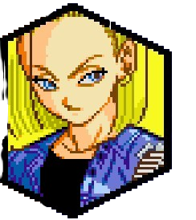
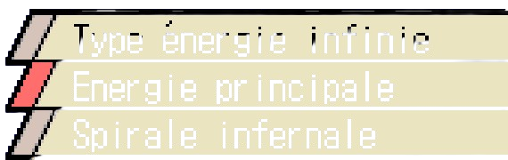
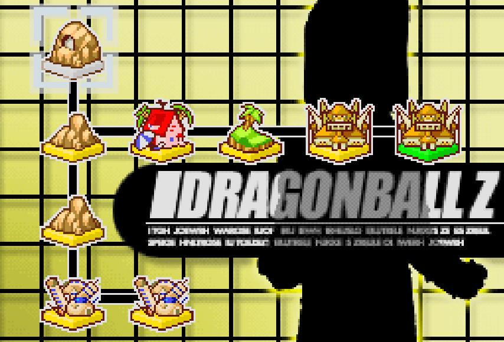
Le docteur Gero, scientifique suirvivant de l'Armée du Ruban Rouge décide de s'en venger en devant un cyborg et de maintenant s'en prendre à Goku. Alors qu'il est poursuivi par Vegeta, le docteur se réfugie dans son labo afin de jouer sa toute dernière carte: l'activation des deux cyborgs C-17 et C-18. Mais en les activant les cyborgs ne l'écoutent pas du tout et décident de tracer leur propre route en dehors des ordres de leur créateur. Finalement le docteur Gero fut tué par C-17, désormais les cyborgs n'ont plus de maître si ce n'est eux-même.
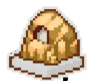
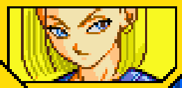

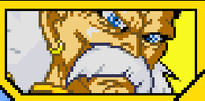
Maintenant qu'ils sont libres, C-17 et C-18 activent C-16 et décident de poursuivre leur objectif de leur création: tuer Son Goku. A la différence que les cyborgs voient cet objectif comme une sorte de jeu, une sorte de chasse à l'homme. mais Vegeta et Trunks leur barrent la route. Alors que Vegeta et Trunks apprenaient l'objectif des cyborgs, Vegeta décida, plein de confiance de les affronter, Trunks voyant que Vegeta se met en danger, sans connaître la puissance de ses adversaires, il décide de se joindre à lui. Voyant que les saiyans sont sûrs d'eux, les cyborgs quant à eux, décident de faire un jeu entre eux, si C-18 arrive à les battre avant qu'il compte jusqu'à 2000 il gagne, sa soeur le rectifie C-17 et lui dit que 1000 ce sera suffisant, car elle a une énergie infinie.
Débloque la compétence "Type énergie infinie"

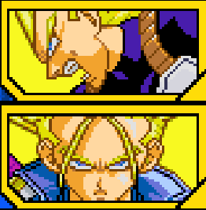
C-18 a perdu son pari et a vaincu Vegeta et Trunks avec un peu plus de difficulté.

Battre Vegeta et Trunks quand le chrono est en dessous de 800.
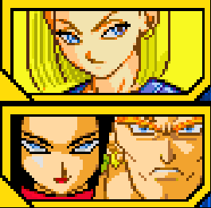
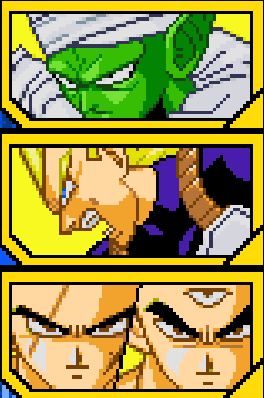
Gohan accompagné de Trunks retrouve la trace de Cell qui est sous forme parfaite et compte l'affronter pour mettre fin à ses agissements.
Débloque la compétence "Frénésie"

Terminer le combat contre les cyborgs dans le futur .
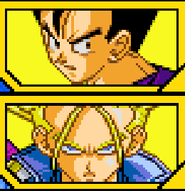
Après avoir vaincu Cell, grâce aux indications de Bulma, ils retrouvent le labo du Dr Gero pour le détruire afin qu'aucun cyborg ne renaisse. En entrant ils se retrouvent avec l'ordinateur du Docteur qui a assimilé l'esprit de Gero afin de recréer un nouveau corps avec les données des Saiyans.
Débloque le Docteur Gero comme personnage jouable à la fin du combat

Terminer le combat contre Cell dans le futur.

Les cyborgs décidèrent de reprendre leur jeu de chasse à Goku, ils prirent la décision de se rendre chez Tortue géniale à Kame House, ils y rencontrent Piccolo et lui demandèrent où se trouve Goku. Piccolo refusant de parler, força les cyborgs a passé à l'offensive, en combattant le namek . Alors que le combat contre C-17 et Piccolo continuait son cours, une ombre menaçante s'approchait à pas de loup, vers le lieu de l'affrontement et nul ne savait qui est ce, c'était Cell qui s'approchait. Ayant comme but d'absorber C-17 et C-18, il se cacha de ses ennemis afin de se renforcer et alors que les deux autres combattants étaient occupés, il prit à revers C-17 et l'absorba. Dés qu'il l'absorba, il fut tellement puissant qu'il mit hors d'état de nuire C-16 et força C-18 a prendre fuir et se cacher dans une île déserte avec C-16.
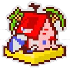

Pendant que Vegeta et Trunks, sortis de la salle de l'Esprit et du Temps affrontaient Cell, les cyborgs restants ne pouvaient que constater leur faiblesse, soudainement Krilin apparaît avec une télécommande pouvant désactiver les cyborgs. C-18 choquée par l'apparition de la télécommande, une hésitation se fit sentir des deux côtés. Alors qu'elle ne s'y attendait pas, Krilin détruisit la télécommande en lui disant de fuir, ce qui déstabilisa C-18, qui ne comprend pas le choix du terrien. Au final, elle dût continuer sa fuite. Mais Cell l'avait repérée et l'absorba. Cell devint parfait et affronta Gohan et Goku lors du Cell Games. Le temps qu'elle soit revenue à elle, la bataille était déjà terminée. Avec les Dragon Balls, Krilin demanda à ce que les explosifs des cyborgs soient retirées et toute rentra dans l'ordre.

Terminer le combat contre Piccolo
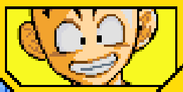
Après avoir été vaincu par Cell, C-18 et Krilin se marrièrent et eurent une petite fille nommée Marron. Gohan les invite à participer au Tenkaichi Budokai, intéressés par la récompense le couple accepte et tous partent s'inscrire. Le premier combat de C-18 est contre Krilin lui même, malgré le fait qu'ils soient ensemble, les deux décident de ne pas se retenir durant le combat. Finalement C-18 gagne quand même contre son mari.

Terminer le combat contre Boo
Le championnat devait initalement poursuivre son cours, quand soudainement le sorcier Babidi intervient et met la pagaille sur Terre. Les Z Warriors durent le suivre afin de savoir ce qu'il manigançait. Au tournoi, il fut décidé que la moitié des combattants restants combattent ensemble en Battle Royale. Les combattants restants sont C-18, Mr Satan et un étranger guerrier masqué nommé "le Masque" qui s'est révélé être Goten et Trunks qui voulaient participer avec les adultes, ces derniers se transformèrent en Super Saiyan mais décidèrent au final de fusionner, C-18 quant à elle avait préparée une technique spécialement pour son tournoi et décida de s'en servir. Au final C-18 remporta le combat et se mit face à Mr Satan pour enchaîner son combat, mais le champion pour garder son honneur de sauveur de la Terre fit un marché avec elle pour le laisser gagner et en échange lui donner la récompense, ce qu'elle accepte. Au terme de l'échange, elle perd et décide de partir chercher la récompense chez Satan. Au final C-18 et les autres mènent une vie paisible sur Terre sans danger pour elle ou pour qui que ce soit.
Débloque l'Attaque Ultime "Energie principal" .
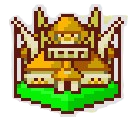
Terminer le combat contre Krilin au Tenkaichi Budokai